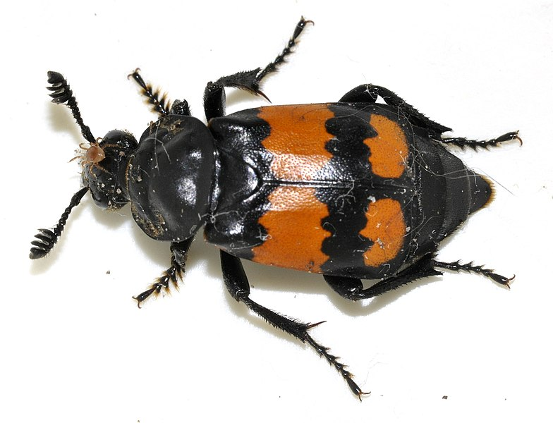
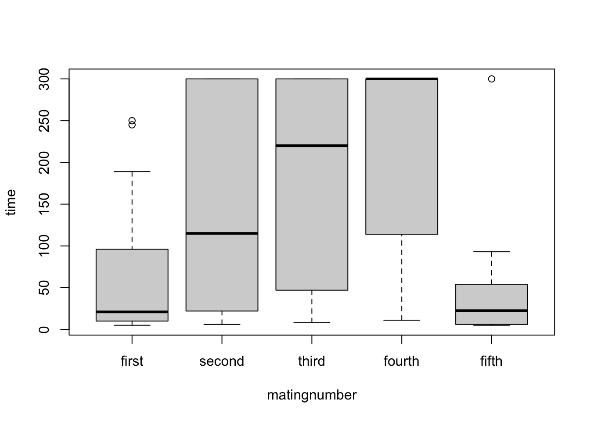
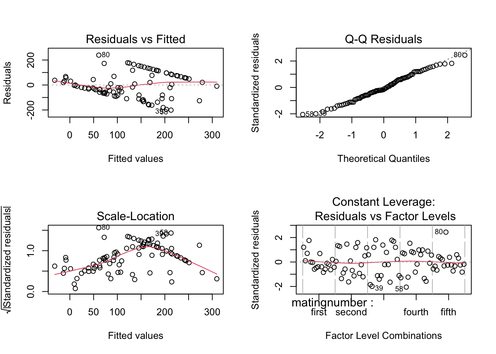
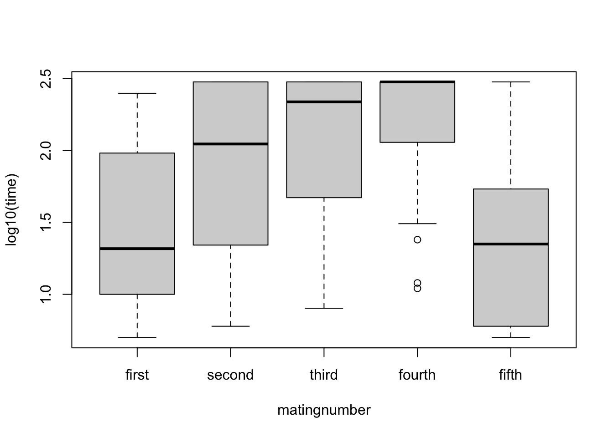
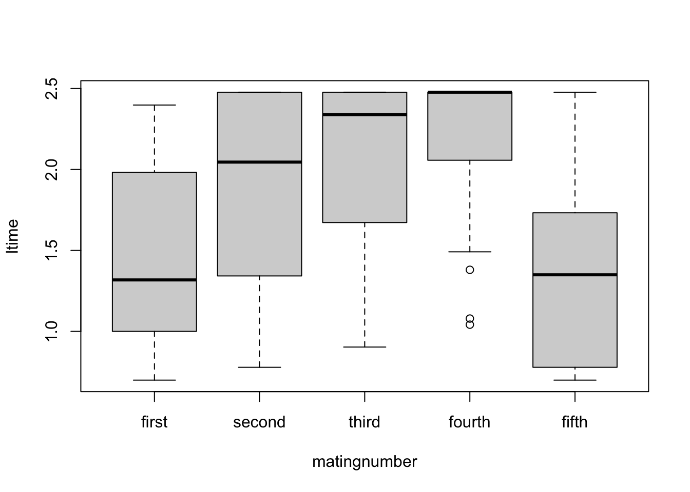
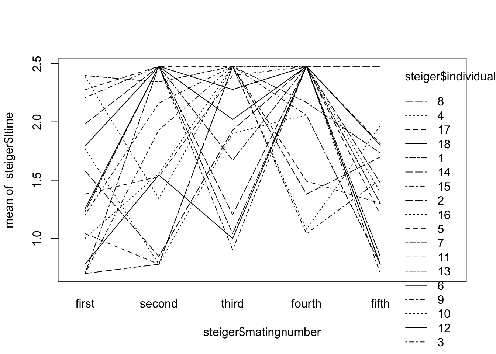
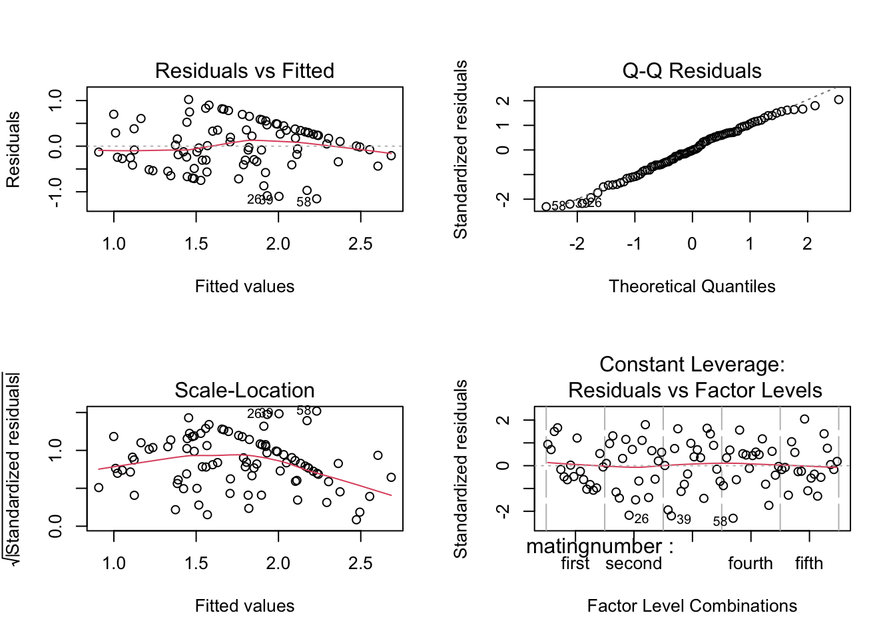
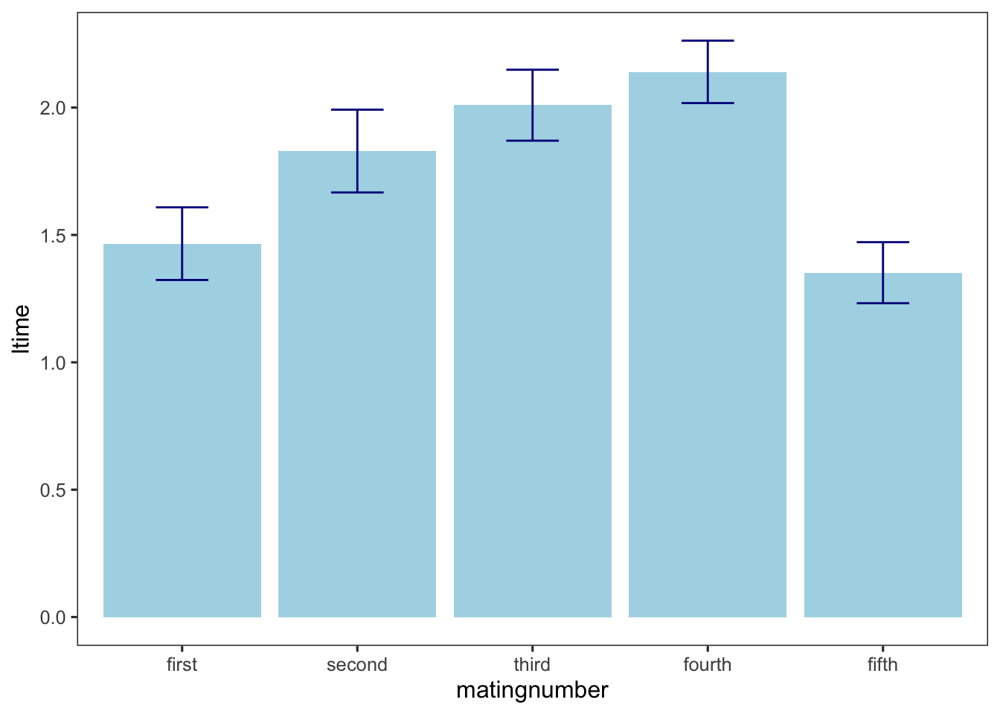

library(tidyverse)
source("R/set_ggplot_theme.R")
library(broom)
library(Rmisc)
library(car)
library(lme4)
library(lmerTest)
library(nlme)
library(VCA)
library(afex)
library(ez)
library(apaTables)
library(emmeans)
library(MuMIn)QK Box 12.1
Steiger et al. (2008) studied the Coolidge effect, the decline in males’ interest in mating with the same female compared to novel females, using the burying beetle Nicrophorus vespilloides. Eighteen male beetles were presented with the same female beetle four times, and then a novel female on the fifth occasion. This was a repeated measures design as the same individual males were repeatedly presented with females. There was no evidence that physical exhaustion affected time to mating as a separate control group of males were presented with novel, unmated females five times in succession, and there was no change in time to mating. The within-subjects factor was the order of presented females, and while this could have been treated as a continuous covariate, we treated it as a fixed factor with five groups. The response variable recorded on each occasion was time to mating.

Francisco Welter-Schultes, CC0, via Wikimedia Commons
Steiger, S., Franz, R., Eggert, A. K. & Muller, J. K. (2008). The Coolidge effect, individual recognition and selection for distinctive cuticular signatures in a burying beetle. Proceedings of the Royal Society B, 275, 1831-8.
Link to the paper: doi: 10.1098/rspb.2008.0375 and data
Preliminaries
First, load the required packages (afex, car, lattice, lme4, lmerTest, nlme, VCA, ez, emmeans, Rmisc, MuMIn)
Import steiger data file (steiger.csv)
steiger <- read.csv("data/steiger.csv")
steiger matingnumber individual time
1 first 1 250
2 first 2 96
3 first 3 162
4 first 4 245
5 first 5 11
6 first 6 6
7 first 7 17
8 first 8 38
9 first 9 16
10 first 10 59
11 first 11 24
12 first 12 18
13 first 13 5
14 first 14 5
15 first 15 5
16 first 16 10
17 first 17 189
18 first 18 62
19 second 1 220
20 second 2 300
21 second 3 300
22 second 4 22
23 second 5 6
24 second 6 35
25 second 7 300
26 second 8 7
27 second 9 145
28 second 10 6
29 second 11 34
30 second 12 300
31 second 13 300
32 second 14 6
33 second 15 85
34 second 16 36
35 second 17 300
36 second 18 300
37 third 1 300
38 third 2 16
39 third 3 8
40 third 4 300
41 third 5 300
42 third 6 10
43 third 7 47
44 third 8 85
45 third 9 300
46 third 10 80
47 third 11 250
48 third 12 190
49 third 13 11
50 third 14 300
51 third 15 300
52 third 16 300
53 third 17 300
54 third 18 105
55 fourth 1 147
56 fourth 2 300
57 fourth 3 300
58 fourth 4 12
59 fourth 5 31
60 fourth 6 300
61 fourth 7 298
62 fourth 8 300
63 fourth 9 114
64 fourth 10 115
65 fourth 11 300
66 fourth 12 300
67 fourth 13 300
68 fourth 14 24
69 fourth 15 11
70 fourth 16 300
71 fourth 17 300
72 fourth 18 300
73 fifth 1 54
74 fifth 2 30
75 fifth 3 5
76 fifth 4 93
77 fifth 5 20
78 fifth 6 6
79 fifth 7 20
80 fifth 8 300
81 fifth 9 6
82 fifth 10 6
83 fifth 11 16
84 fifth 12 6
85 fifth 13 7
86 fifth 14 50
87 fifth 15 32
88 fifth 16 25
89 fifth 17 65
90 fifth 18 63Set contrasts from afex. Make individual a factor. Rearrange matingnumber order to override default alphabetical order
set_sum_contrasts()
steiger$individual <- factor(steiger$individual)
steiger$matingnumber <- factor(steiger$matingnumber, levels=c("first","second","third","fourth","fifth"))Quick boxplot to look at variances for different mating numbers
boxplot(time~matingnumber, data=steiger)
Fit OLS model with default aov SS
steiger.aov <- aov(time~matingnumber+individual, data=steiger)Check residuals - some evidence for interaction
par(mfrow = c(2,2))
plot(steiger.aov)
Do interaction plot
dev.off()null device
1 interaction.plot(steiger$matingnumber, steiger$individual, steiger$time)The rank order of treatments consistent but the sizes of the differences vary greatly between individuals. Quickly try boxplot with log-transformed data to see if any improvement
boxplot(log10(time)~matingnumber, data=steiger)
Transform to logs due to variance heterogeneity and to minimise interaction
steiger$ltime <- log10(steiger$time)Recheck diagnostics - much better with less interaction
boxplot(ltime~matingnumber, data=steiger)
interaction.plot(steiger$matingnumber, steiger$individual, steiger$ltime)
Fit OLS model with default aov SS
steiger.aov1 <- aov(ltime~matingnumber+individual, data=steiger)check residuals - look OK
par(mfrow = c(2,2))
plot(steiger.aov1)
Examine results
Once we’re happy with the model that we’re fitting, we can look at the results.
tidy(steiger.aov1)# A tibble: 3 × 6
term df sumsq meansq statistic p.value
<chr> <dbl> <dbl> <dbl> <dbl> <dbl>
1 matingnumber 4 8.36 2.09 6.32 0.000220
2 individual 17 6.72 0.395 1.19 0.293
3 Residuals 68 22.5 0.331 NA NA emmeans(steiger.aov1, "matingnumber") matingnumber emmean SE df lower.CL upper.CL
first 1.47 0.136 68 1.20 1.74
second 1.83 0.136 68 1.56 2.10
third 2.01 0.136 68 1.74 2.28
fourth 2.14 0.136 68 1.87 2.41
fifth 1.35 0.136 68 1.08 1.62
Results are averaged over the levels of: individual
Confidence level used: 0.95 Get Greenhouse Geiser adjusted results
ezsteiger1 <- ezANOVA(data=steiger, dv=ltime, wid=individual, within=matingnumber, type=3, detailed=TRUE)
print(ezsteiger1)$ANOVA
Effect DFn DFd SSn SSd F p p<.05
1 (Intercept) 1 17 278.553891 6.721791 704.487281 2.810816e-15 *
2 matingnumber 4 68 8.363523 22.503779 6.318045 2.202193e-04 *
ges
1 0.9050438
2 0.2224987
$`Mauchly's Test for Sphericity`
Effect W p p<.05
2 matingnumber 0.4311659 0.1662601
$`Sphericity Corrections`
Effect GGe p[GG] p[GG]<.05 HFe p[HF] p[HF]<.05
2 matingnumber 0.6778482 0.001551317 * 0.8189228 0.0006568278 *Use VCA package to get anova var comps (with CIs that can be -ve)
steiger.vca <- anovaMM(ltime~matingnumber+(individual), steiger)
steiger.vca
ANOVA-Type Estimation of Mixed Model:
--------------------------------------
[Fixed Effects]
int matingnumberfifth matingnumberfirst matingnumberfourth
2.009337 -0.657543 -0.543510 0.130802
matingnumbersecond matingnumberthird
-0.180066 0.000000
[Variance Components]
Name DF SS MS VC %Total SD CV[%]
1 total 84.524647 0.34383 100 0.58637 33.330258
2 individual 17 6.721791 0.395399 0.012892 3.749614 0.113544 6.454044
3 error 68 22.503779 0.330938 0.330938 96.250386 0.575272 32.69941
Mean: 1.759273 (N = 90)
Experimental Design: balanced | Method: ANOVAVCAinference(steiger.vca, alpha=0.05, VarVC=TRUE, excludeNeg=FALSE, constrainCI=FALSE)
Inference from Mixed Model Fit
------------------------------
> VCA Result:
-------------
[Fixed Effects]
int matingnumberfifth matingnumberfirst matingnumberfourth
2.0093 -0.6575 -0.5435 0.1308
matingnumbersecond matingnumberthird
-0.1801 0.0000
[Variance Components]
Name DF SS MS VC %Total SD CV[%] Var(VC)
1 total 84.5246 0.3438 100 0.5864 33.3303
2 individual 17 6.7218 0.3954 0.0129 3.7496 0.1135 6.454 9e-04
3 error 68 22.5038 0.3309 0.3309 96.2504 0.5753 32.6994 0.0032
Mean: 1.7593 (N = 90)
Experimental Design: balanced | Method: ANOVA
> VC:
-----
Estimate CI LCL CI UCL One-Sided LCL One-Sided UCL
total 0.3438 0.2598 0.4765 0.2716 0.4517
individual 0.0129 -0.0447 0.0705 -0.0355 0.0613
error 0.3309 0.2428 0.4779 0.2550 0.4499
> SD:
-----
Estimate CI LCL CI UCL One-Sided LCL One-Sided UCL
total 0.5864 0.5097 0.6903 0.5212 0.6721
individual 0.1135 -0.2115 0.2656 -0.1883 0.2475
error 0.5753 0.4927 0.6913 0.5050 0.6707
> CV[%]:
--------
Estimate CI LCL CI UCL One-Sided LCL One-Sided UCL
total 33.3303 28.9747 39.2390 29.6256 38.2040
individual 6.4540 -12.0227 15.0949 -10.7056 14.0684
error 32.6994 28.0080 39.2935 28.7036 38.1260
95% Confidence Level
SAS PROC MIXED method used for computing CIs Fit random intercept model using lme4 and REML
steiger.lmer1 <- lmer(ltime~matingnumber + (1|individual), REML=TRUE, steiger)
summary(steiger.lmer1, ddf="Kenward-Roger")Linear mixed model fit by REML. t-tests use Kenward-Roger's method [
lmerModLmerTest]
Formula: ltime ~ matingnumber + (1 | individual)
Data: steiger
REML criterion at convergence: 167.9
Scaled residuals:
Min 1Q Median 3Q Max
-1.9213 -0.8145 0.2051 0.6980 1.9271
Random effects:
Groups Name Variance Std.Dev.
individual (Intercept) 0.01289 0.1135
Residual 0.33094 0.5753
Number of obs: 90, groups: individual, 18
Fixed effects:
Estimate Std. Error df t value Pr(>|t|)
(Intercept) 1.75927 0.06628 17.00000 26.542 2.81e-15 ***
matingnumber1 -0.29345 0.12128 68.00000 -2.420 0.0182 *
matingnumber2 0.07000 0.12128 68.00000 0.577 0.5657
matingnumber3 0.25006 0.12128 68.00000 2.062 0.0430 *
matingnumber4 0.38087 0.12128 68.00000 3.140 0.0025 **
---
Signif. codes: 0 '***' 0.001 '**' 0.01 '*' 0.05 '.' 0.1 ' ' 1
Correlation of Fixed Effects:
(Intr) mtngn1 mtngn2 mtngn3
matingnmbr1 0.000
matingnmbr2 0.000 -0.250
matingnmbr3 0.000 -0.250 -0.250
matingnmbr4 0.000 -0.250 -0.250 -0.250anova(steiger.lmer1, type=3, ddf="Kenward-Roger")Type III Analysis of Variance Table with Kenward-Roger's method
Sum Sq Mean Sq NumDF DenDF F value Pr(>F)
matingnumber 8.3635 2.0909 4 68 6.318 0.0002202 ***
---
Signif. codes: 0 '***' 0.001 '**' 0.01 '*' 0.05 '.' 0.1 ' ' 1emmeans(steiger.lmer1, ~matingnumber) matingnumber emmean SE df lower.CL upper.CL
first 1.47 0.138 84.5 1.19 1.74
second 1.83 0.138 84.5 1.55 2.10
third 2.01 0.138 84.5 1.73 2.28
fourth 2.14 0.138 84.5 1.87 2.41
fifth 1.35 0.138 84.5 1.08 1.63
Degrees-of-freedom method: kenward-roger
Confidence level used: 0.95 Note different CIs compared to OLS model fitting due to K-R adjustment
CI on variance components (remembering to square CIs from lmer which are in SD units)
steiger.ci1 <- confint.merMod(steiger.lmer1, oldNames=FALSE)
steiger.vc1 <- (steiger.ci1)^2
print(steiger.vc1) 2.5 % 97.5 %
sd_(Intercept)|individual 0.0000000000 0.09444955
sigma 0.2292861943 0.43705072
(Intercept) 2.6438048318 3.58181697
matingnumber1 0.2783247753 0.00351979
matingnumber2 0.0269356442 0.09248673
matingnumber3 0.0002542346 0.23443208
matingnumber4 0.0215345611 0.37820498Bar graph for time main effect
steiger_sum <- summarySE(steiger, measurevar= 'ltime', groupvars= 'matingnumber')
ggplot(steiger_sum, aes(x=matingnumber, y=ltime))+
geom_bar(stat="identity", position="dodge", fill="lightblue")+
geom_errorbar(aes(ymin=ltime-se, ymax=ltime+se), width=0.3, color="darkblue")